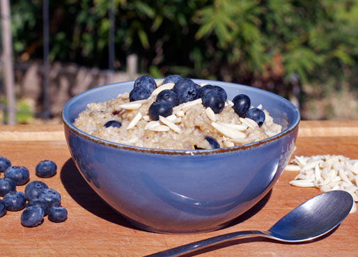

Oatmeal

A healthy start to any morning.
With a mix of seeds, almonds, blueberries, and protein powder,
this bowl will satisfy your taste buds and give you the energy to
tackle your morning.
While I use pea protein, any protein powder will do. The taste will
vary depending on the kind of protein powder you use. Be sure to
experiment to see what tickles your fancy!
Ingredients
- Quick Oats - Half Cup
- Almond Slivers or Slices - Half Cup
- Protein Powder (Your Choice) - Half Cup
- Flax Seeds - 1 TBSP
- Chia Seeds - 1/2 TBSP
- Blueberries - 1 Handful
Steps
- Start by bringing two cups of water to a boil.
While that's happening put the ingredients together.
- Scoop a half cup of quick oats into a bowl.
- Scoop a half cup of almond slivers or slices into a bowl.
- Scoop a half cup of your favorite protein powder into a bowl.
- Scoop a tablespoon of flax seeds into a coffee grinder.
- Scoop a half tablespoon of chia seeds into a coffee grinder.
- Grind the seeds into a powder. Pour powder into bowl.
- Mix ingredients thoroughly. Pour the boiling water into the bowl
and continue mixing the ingredients. The oatmeal will slowly absorb
the water so this will take a few minutes.
- Wash the blueberries and add to the bowl.
- Add more water to get the consitency you desire from your oatmeal.
- Enjoy!